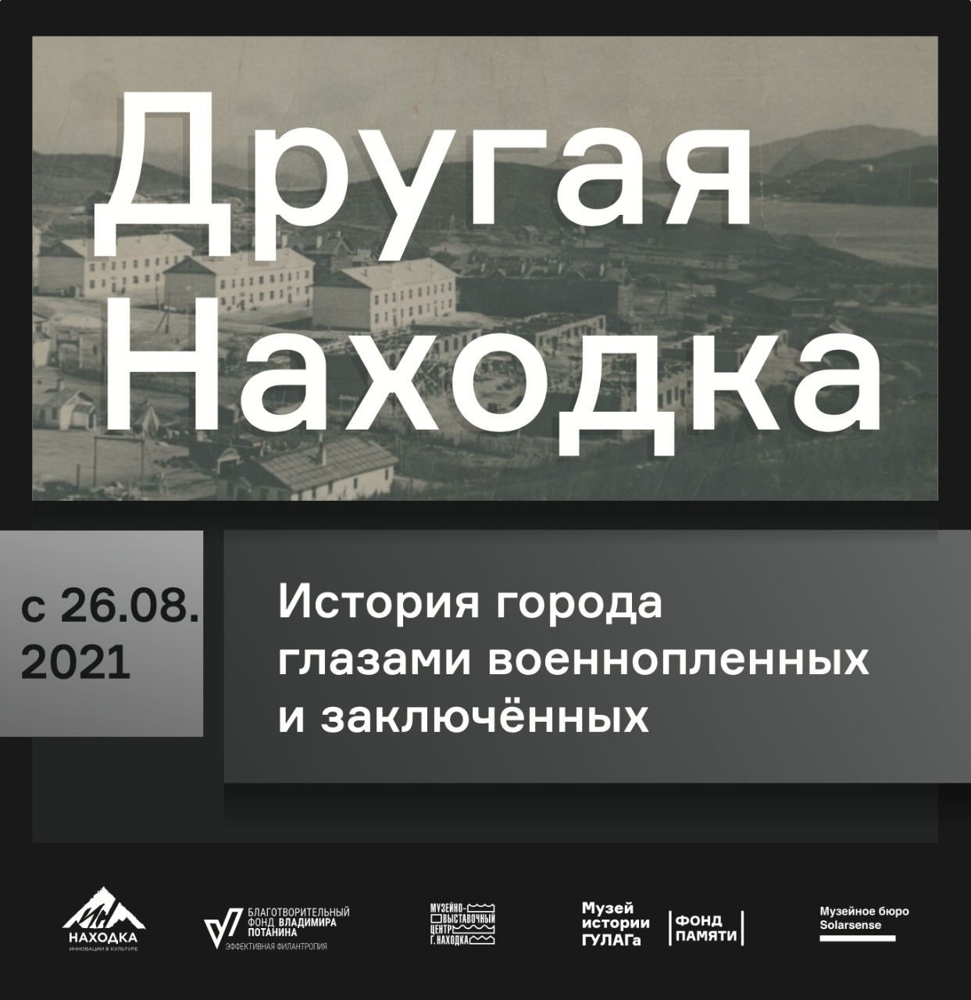
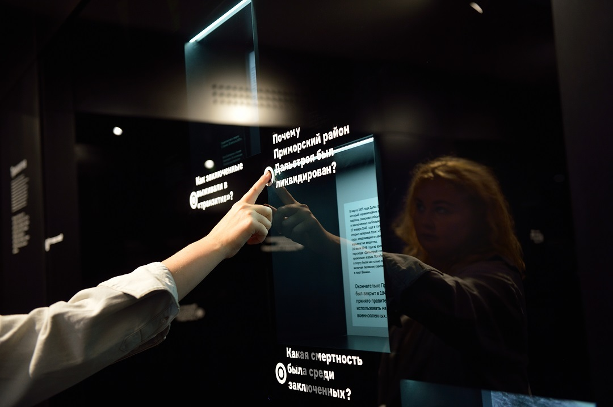
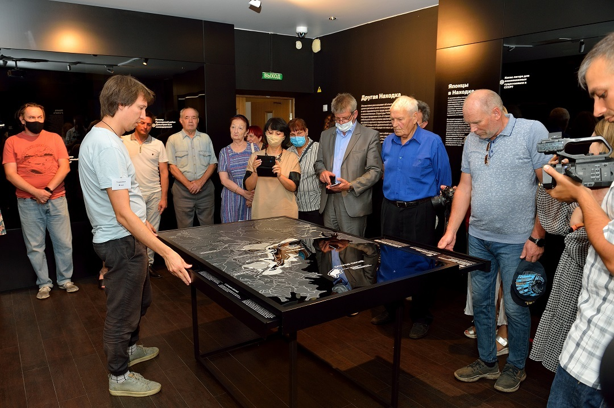
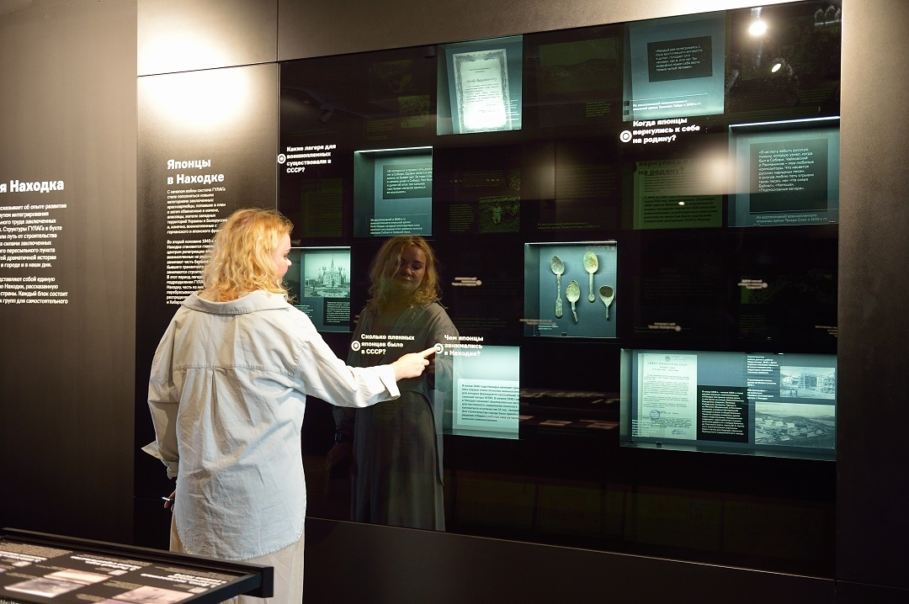

Выставка "Другая Находка"
Фонд Памяти, Музей истории ГУЛАГа и Музейно-выставочный центр г. Находка
при поддержке Центра социальных инноваций в сфере культуры «Инновации
Находки» и Общественной организации «Надежда».
26 августа 2021 года откроют тематическую экспозицию, которая рассказывает
о лагерной истории города - от женского лагпункта на острове Лисий в 1930-х
годах до отраслевых лагерей 1950-х.
Проект «Центр социальных инноваций в сфере культуры «Инновации Находки»
реализуется в рамках конкурса «Эффективная филантропия»
Благотворительного фонда Владимира Потанина
Новая выставка станет частью постояSнной исторической экспозиции «Города по
имени Находка» и расскажет об опыте развития целого региона страны путем
интегрирования в него подневольного труда заключенных и военнопленных.
проделала путь от небольшого порта до самого крупного пересыльного
пункта заключенных в СССР. Остатки этой лагерной истории можно
встретить в городе и в наши дни.
Экспозиция «Другая Находка» позволяет разобраться в
последовательности и сути происходивших здесь событий. Она построена
по тематико-хронологическому принципу и проводит посетителей по всей
истории: от женского лагерного пункта на острове Лисий, открытого в 1937
году для заготовки и обработки рыбы, до отраслевых лагерей 1950-х годов.
лагерную историю Находки, рассказанную в контексте всей страны. Все
материалы представлены здесь в интерактивном формате и рассчитаны на
самостоятельное изучение.
Экспозиция «Другая Находка» — результат совместной работы научных
сотрудников Музея истории ГУЛАГа (г. Москва) и Музейно-выставочного
центра г. Находка. Поддержку в реализации проекта оказал Фонд Памяти,
одна из главных целей которого — создание новых и модернизация
существующих экспозиций, посвящённых истории советских массовых
репрессий. Накануне открытия выставки партнеры посетят остров Лисий и
другие места лагерного периода в Находке 1930-50-х годов.
С 10:00 до 17:30 свяжитесь с нами по телефону:
при поддержке Центра социальных инноваций в сфере культуры «Инновации
Находки» и Общественной организации «Надежда».
26 августа 2021 года откроют тематическую экспозицию, которая рассказывает
о лагерной истории города - от женского лагпункта на острове Лисий в 1930-х
годах до отраслевых лагерей 1950-х.
Проект «Центр социальных инноваций в сфере культуры «Инновации Находки»
реализуется в рамках конкурса «Эффективная филантропия»
Благотворительного фонда Владимира Потанина
Новая выставка станет частью постояSнной исторической экспозиции «Города по
имени Находка» и расскажет об опыте развития целого региона страны путем
интегрирования в него подневольного труда заключенных и военнопленных.

Город был важной точкой на карте системы лагерей ГУЛАГа: Находка проделала путь от небольшого порта до самого крупного пересыльного
пункта заключенных в СССР. Остатки этой лагерной истории можно
встретить в городе и в наши дни.
Экспозиция «Другая Находка» позволяет разобраться в
последовательности и сути происходивших здесь событий. Она построена
по тематико-хронологическому принципу и проводит посетителей по всей
истории: от женского лагерного пункта на острове Лисий, открытого в 1937
году для заготовки и обработки рыбы, до отраслевых лагерей 1950-х годов.

Пять тематических блоков экспозиции представляют собой единую лагерную историю Находки, рассказанную в контексте всей страны. Все
материалы представлены здесь в интерактивном формате и рассчитаны на
самостоятельное изучение.
Экспозиция «Другая Находка» — результат совместной работы научных
сотрудников Музея истории ГУЛАГа (г. Москва) и Музейно-выставочного
центра г. Находка. Поддержку в реализации проекта оказал Фонд Памяти,
одна из главных целей которого — создание новых и модернизация
существующих экспозиций, посвящённых истории советских массовых
репрессий. Накануне открытия выставки партнеры посетят остров Лисий и
другие места лагерного периода в Находке 1930-50-х годов.

Запишитесь прямо сейчас!
С 10:00 до 17:30 свяжитесь с нами по телефону: